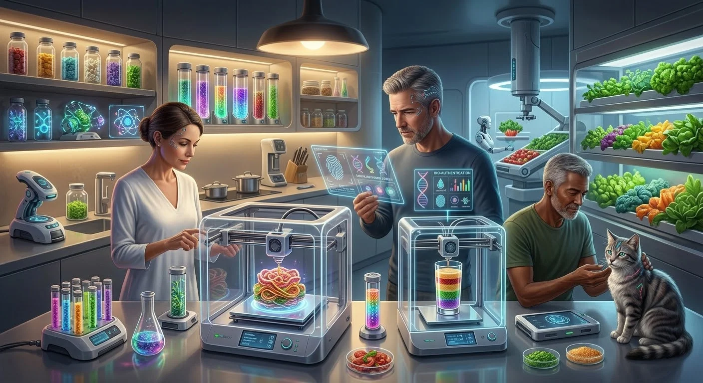

الغذاء والمشروبات
يهدف قسم الغذاء في HGW إلى توفير مشتريات يومية طبيعية وصحية ولذيذة، مع خيارات من المنتجات الحيوية وتشكيلة تناسب الأسر والطلبات الفردية.

خيارات الشراء المقترحة
- أغذية معبّأة طبيعية وصحية ولذيذة، مع خيارات حيوية.
- مشروبات معبّأة طبيعية وصحية ولذيذة، مع خيارات حيوية.
- أغذية مطبوخة تُحضَّر من مكونات طبيعية، مع خيارات حيوية.
- عصائر طازجة من مكونات طبيعية، مع خيارات حيوية.
- أغذية ومشروبات للأطفال ضمن تشكيلة مخصّصة لهم.
- أغذية ومشروبات حسب الطلب تُجهَّز وفق تفضيلات العميل والمكونات المتاحة.
تسعير الأعضاء
يقوم النموذج المقترح على هامش ربح رمزي للأعضاء. الهدف أن يصل سعر بعض المنتجات إلى ٣٠٪ من سعر المنتجات المماثلة في السوق. السعر الفعلي يتحدد لكل منتج حسب التكلفة والتوافر.